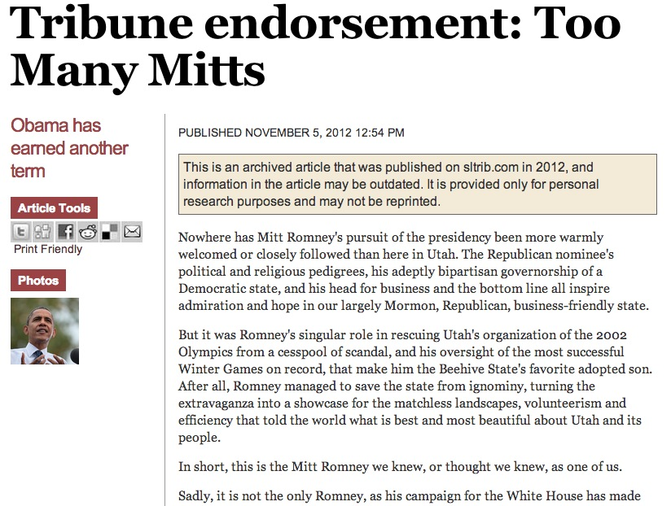
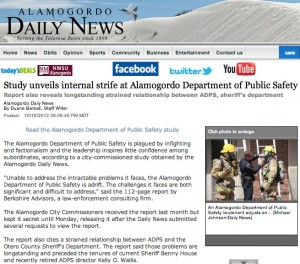
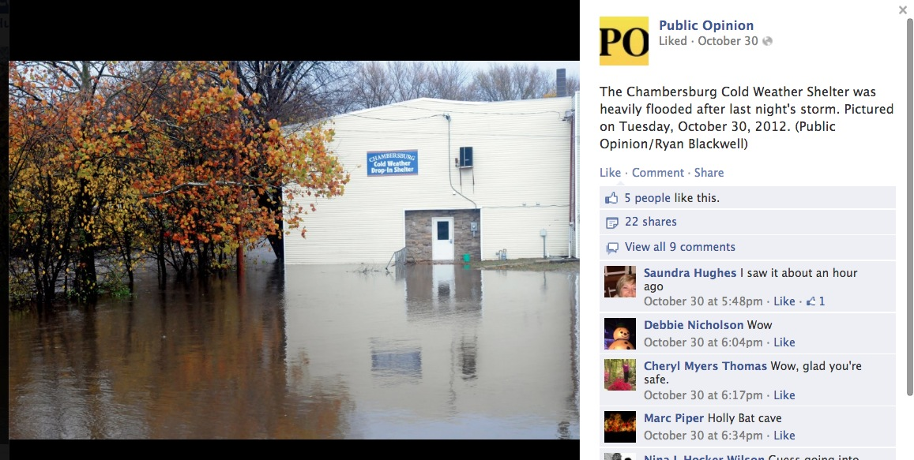
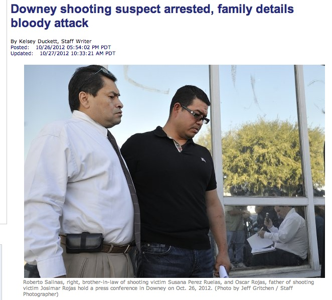
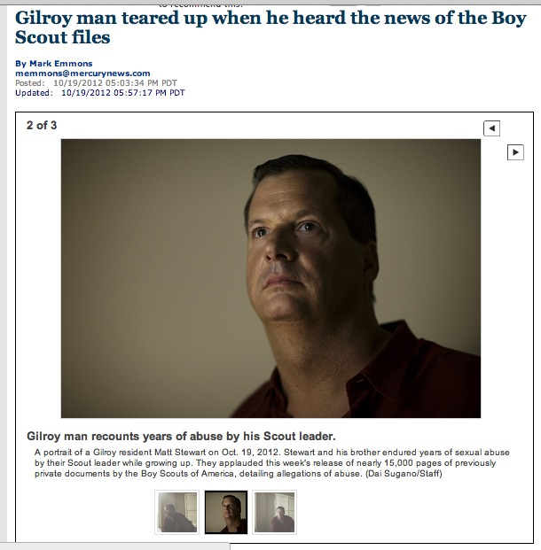
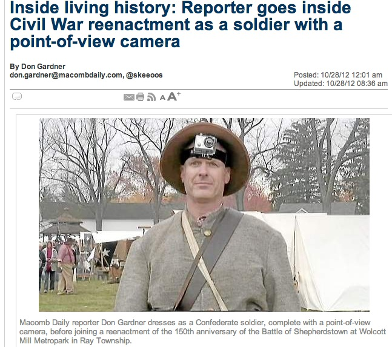

Lots of the things we think of as great old-school journalism are represented in the October DFMie winners: Investigative journalism, exposing corrupt public officials, disaster coverage, election coverage, strong editorials, excellent photography, breaking news.
Lots of the things we think of as great digital journalism are also represented in the October DFMie winners: Engaging the community through Facebook, data analysis, creative use of video, crowdsourcing, breaking news on Twitter, aggregation.
“It’s great to see DFM journalists across the country using so many different tools to tell stories that inform, entertain and hold the powerful accountable,” said Digital First Media Editor-in-Chief Jim Brady. “I’m proud of the work we’re doing, and am really excited about getting the word out more via the DFMies.”
The October DFMie winners illustrate Digital First Media’s commitment to quality journalism of great variety. The month’s big stories were well represented in our winners.
The big continuing national story of October was the election. Salt Lake Tribune Editorial Page Editor Vern Anderson won the DFMie for the Colorado-Utah cluster for its strongly written editorial endorsing Barack Obama for re-election in the state where Mormon Mitt Romney had risen to national prominence with his rescue of the troubled 2002 Winter Olympics.
Of course, the election was also an important local story in every community. In the Northern California cluster, Ryan Olson’s digital election guide for the Chico Enterprise-Record, covering all the local races and issues, won the DFMie for mixing locally produced content with coverage of statewide races aggregated from the Los Angeles News Group.
The big national breaking story was Hurricane Sandy, and Beth Anne Heesen, Samantha Cossick and Markell DeLoatch of the Public Opinion in Chambersburg, Pa., won the DFMie for the Pennsylvania/New Jersey/West Virginia cluster with their powerful photography, reporting and engagement on Facebook during Sandy.
That wasn’t the only DFMie for breaking news. Kelsey Duckett of the Press-Telegram in Long Beach won the Los Angeles News Group DFMie for her coverage of a multiple shooting, which included strong Twitter coverage as well as excellent stories.
Don Gardner of the Macomb Daily was covering a story countless reporters have covered before in countless communities over the years: a Civil War battle re-enactment. He made his coverage stand out by wearing a point-of-view video camera that took viewers into the battle. He wins the Midwest cluster’s DFMie.
Watchdog reporting that exposed local corruption, inefficiency and pedophilia also won DFMies:
- In the Northeast cluster, Jolene Cleaver of the Oneida Daily Dispatch won for her effective use of crowdsourcing in exposing forged signatures on petitions submitted to the local election board.
- In the Texas/New Mexico cluster, Duane Barbati of the Alamogordo Daily News wins for his persistence in reporting on the city’s refusal to release of a report on the Alamogordo Department of Public Safety and then in reporting on the problems the report found in the department.
- Reporter Mark Emmons wins in the Bay Area News Group for his story about a local former Boy Scout who was part of the lawsuit that led to release of the so-called “perversion files” of the Boy Scouts of America. Mark’s story was part of a larger project that included data analysis of the files by colleagues in Thunderdome and BANG.
The winners discuss their work in the video above.
When we wrote the rules for the DFMies earlier this year, we deliberately didn’t establish categories for different types of journalism. We just wanted to recognize the best journalism, period. Yeah, we wanted to recognize excellence in digital journalism, but we wanted to do that without a separate digital category. We wanted to recognize breaking news, opinions, watchdog journalism and visual journalism without creating special categories for each. We wanted to recognize journalists from smaller newsrooms without creating their own category.
The October DFMies, judged by September’s winners, covered all these different kinds of journalism.
The October DFMies did prompt one change in the rules for the DFMies, though. Initially, the awards were limited to works of journalism by no more than two journalists. We’ve had several entries the first two months that either strained to pick one or two journalists from a team effort or didn’t meet the rules. The Public Opinion team’s entry named two reporters and a photojournalist who contributed to the effort, a violation I didn’t notice until after judges had selected it as the winner. We decided to make an exception and recognize the outstanding work of the Public Opinion team as the winner for October and adjust the rules accordingly.
Entries of more than two journalists are now acceptable. In those cases, the cash award will go for a newsroom party, rather than to the individuals. We are pleased that in addition to recognizing the wide variety of journalism types we already are honoring that the DFMies will recognize outstanding teamwork as well as individual excellence.
More on the individual winners:
Vern Anderson, Salt Lake Tribune
In nominating Vern for this award, Tribune editor Nancy Conway wrote:
The Salt Lake Tribune’s editorial endorsing Barack Obama for president was a watershed for the paper’s website. The editorial generated 1.2 million page views, more than any item in the history of sltrib.com. Its withering portrayal of Mitt Romney’s inconsistencies came as a shock to an outside audience who thought Romney was universally loved in Utah, and it strengthened The Tribune’s brand as the state’s independent voice.
“It had to take guts to do that,” said one judge.
“It is a great example of how informed opinions are still important and can make a difference,” said another judge.
When informed of his selection for the award, Vern quickly shared the credit:
I credit Publisher Dean Singleton for the courage not to endorse Mitt Romney in a Republican and Mormon state that gave him 72 percent of its vote. The board was unanimous.
Other Colorado-Utah finalists were reporter Jessica Benes of the Loveland Reporter-Herald for a Veterans Day audio/video package using Google Voice and reporter Magdalena Wegrzyn of the Longmont Times-Call for a story on a small-town development controversy.
Duane Barbati, Alamogordo Daily News
In nominating Duane for the DFMie, Cluster Editor Bob Moore wrote:
The Alamogordo Daily News met strong resistance when it attempted to obtain a study the city had commissioned of its embattled public safety agency. The city rebuffed several efforts to make it public. The Daily News wrote stories and editorials exposing the illegal refusal. Finally, the city relented and made the report public. It detailed an extremely dysfunctional public safety apparatus in Alamogordo, something of importance to every city resident.
The judges echoed the praise:
I like it any time a reporter doesn’t accept ‘no’ from public officials and files a Public Records Act request, especially in towns where the officials probably think no one will ever push them around. Hopefully, the publication of the report about strife in the Public Safety department provided vital information to readers and helped bring some change as Duane Barbati followed this issue. That’s why we’re here.
Other Tex-Mex finalists were reporter Jenny Kane of the Farmington Daily Times for a story on a paraplegic man who was left in the desert by strangers who gave him a ride (the links are no longer available) and reporter Andi Murphy of the Las Cruces Sun-News for an audio slideshow preview of a concert by The Black Keys and Tegan and Sara.
Jolene Cleaver, Oneida Daily Dispatch
In nominating Jolene for the DFMie, Editor Kurt Wanfried wrote:
Jolene Cleaver used crowdsourcing, digital tools and dogged investigative reporting to uncover a situation that might send a local politician to jail.
Acting on a tip that the state Election Board threw out a set of Independence Party petitions because of forged signatures, Jolene filed a freedom of information request and obtained those petitions and others. After she called a few people who said they didn’t sign the petitions, the Dispatch used Scribd to post the petitions online, so readers could check whether their names had been forged on the documents. Many readers said their signatures had been forged and three citizens filed formal complaints. An independent prosecutor is investigating. “A clear case of crowdsourcing at its best,” Kurt said.
“This story is clear example of public service journalism. If the newspaper didn’t do this, little if anything would have happened,” said a judge.
Other Northeast finalists were Jordan Fenster (who, alas, has left our Connecticut newsrooms) for his coverage of the Connecticut 5th District congressional race and Daytime Editor Bob Audette of the Brattleboro Reformer for a series on emergency preparedness (link no longer available).
Samantha Cossick, Beth Anne Heesen, Markell DeLoatch, The Public Opinion
“Because of our unusually high number of Facebook followers for a small community, we decided to use Facebook as our primary platform during Hurricane Sandy,” Editor Becky Bennett wrote in nominating this team. “In addition to using it as a platform for breaking news, we treated our Facebook page as a ‘virtual’ community center for people stuck at home for days/hours and worried about what was happening elsewhere. Reporters Beth Anne Heesen and Samantha Cossick, and photographer Markell DeLoatch posted nearly around-the-clock updates, photos and videos.”
York colleagues who chose this entry as a finalist for the cluster noted “how aggressive, consistent and engaging the posts were. There are a lot of links back to coverage on the website, but there are also a lot of newsy updates that stand on their own. The frequency, quality and usefulness of the posts insisted on return visits by readers, and the site has the numbers to prove how valuable this was to the community.”
Judges loved the reporting, photography and engagement:
Great journalism, great digital skills, great community engagement and community service. Where do people go? To the newspaper’s face book page. The mission of community service through the providing of information, especially in times of crisis, remains the same even as the delivery platform changes. Great work.
This isn’t a story we can link to, and not all of the October posts still show on the Public Opinion’s timeline, but you can see a photo album and a couple updates with community information.
Other Pennsylvania/New Jersey/West Virginia finalists were Jeff Wolfe of the Delaware County Times for a story about a tribute to Vietnam veteran and Matthew Osborne and George O’Gorman of the Trentonian for their liveblog coverage, including video clips, of a big high school football game.
Kelsey Duckett, Long Beach Press-Telegram
After a gunman killed three people and injured two others at a business and a nearby residence, Kelsey responded quickly to the scene, pushed police for information and knocking on neighbors’ doors to dig up details no other media outlet had.
In nominating Kelsey, LANG editor Michael Anastasi wrote:
Via Twitter she was constantly posting updates and bits of new information as the story developed, while filing stories and calling in updates to post online. The story was updated dozens of times the first day, and similarly as much over the next two days during 12-16 hour workdays as Kelsey regularly beat the LA Times and other media outlets. Because of Kelsey, the Press-Telegram and other LANG papers were the first to have the shooting suspect’s name (thanks to one last, late call to the police Friday night) and to have many details about the victims. At one point a local TV station was basing its coverage on Kelsey’s reporting, calling her sourced information about the circumstances of the shooting ‘the Duckett Theory.’
“It showed great work under pressure,” said a judge.
#DowneyShooting: Police say shootings were not random act of violence. Family targeted at residence and place of business.
— Kelsey Duckett (@KelseyDuckett) October 25, 2012
Other LANG finalists were digital editors Daniel Tedford and Daniel Aitken, who developed and executed a package of live election results (sorry, no link available because of the live nature of the package) and photojournalists Jeff Gritchin and John McCoy for their coverage of the flight of the Endeavour to Southern California.
Mark Emmons, San Jose Mercury News
Mark was the only journalist named in this nomination, but his story built on data analysis done by the Thunderdome data team as well as BANG colleagues. “I feel a little awkward being singled out,” Mark said after learning of the award. “I was just trying to help out on what truly was a team effort.” (This is an example of an entry that could be submitted as a team entry starting with the November awards.)
When the Oregon Supreme Court approved the release of the Boy Scouts’ so-called “perversion files’’ data journalists at BANG and Thunderdome collaborated on a database for use across the company. Managing Editor Bert Robinson explained:
The media frenzy surrounding the release proved an initial obstacle: The website that promised access to the files swiftly went down. BANG worked with AP to find a backdoor web link, which was provided to DFM. The DFM data team then scraped the website for the names – which included about two dozen in the Bay Area – and other data. BANG then helped the data team build the database, and embedded the search box and results on article pages for distribution to all Media News Group properties. The result: More than 100,000 page views on BANG sites to the database alone. Our story on the local scout leaders who were named received more than 10,000 page views.
The following day, our reporter Mark Emmons scored an exclusive interview with one of the former Boy Scouts from Oregon whose suit against the scouts led to the release of the perversion files. The circumstances of the interview are a tribute to old-fashioned reporting: Follow your nose, ask questions, make the additional phone call. Searching for an angle, Mark talked to the Oregon attorney who had released the perversion files about his clients. In a free-wheeling conversation, the attorney told Mark that one of his clients now lived in “southern California.” What the hell, Mark thought, and called the guy. Turned out the attorney’s knowledge of California geography was faulty. He lived in Santa Clara County in the Bay Area. We interviewed and photographed him and wrote up a compelling story.
Judges’ praise:
Talk about being on the front end of a giant national story – and building a database that drove clicks throughout the company.
Other finalists in BANG were Apple beat reporter Pat May and personal technology columnist Troy Wolverton, who teamed up to live-blog the introduction of Apple’s long-awaited mini iPad, and Lifestyle producer Kim Chua, who paired up 32 favorite monsters in a bracket for a Halloween Monster Mash engagement.
In his nomination, Executive Editor Richard Kelley wrote:
When reporter Don Gardner said he wanted to participate in the reenactment of a Civil War skirmish and shoot some video. I responded: ‘Put me in the fight.’ So we went to Best Buy and picked up a POV cam to do just that.
Judges loved the result:
The story provided an interesting insight into why these men take this so re-enactment business so seriously. The author employed humor to make the story even more enjoyable, and the video put us right in the middle of the action.
Other Midwest finalists were reporter Kelly Petryszyn of the Morning Journal in Lorain, Ohio, for her coverage of a confrontation between the family of a burglar and the homeowner who fatally shot him and reporter Danny Shaw of Heritage Media for his freedom-of-information quest demanding a report on the effectiveness of public school principals in Michigan.
Ryan Olson, Chico Enterprise-Record
Editor David Little nominated Ryan for building an election guide that provided “one-stop shopping for voters trying to decide how to vote or how to do research on candidates.”
The guide included:
- Videos of five candidate forums, all of which featured Enterprise-Record reporters or editors as questioners.
- 24 half-hour editorial board audio interviews with candidates for state Senate, Chico City Council, Oroville City Council and Chico Unified School District board.
- 24 profile stories of the same candidates.
- A list of editorial endorsements with links to the endorsement editorials.
- Dozens of news stories related to the election.
- More than 100 election-related letters to the editor.
- Links to news stories about the 11 state propositions, using stories from LANG.
(If you check out the link, scroll down past the election-night coverage to find the election-guide content.)
Judges’ praise:
I was really impressed with the simple, easy-to-use web design that allowed you to find your district’s candidates easily.
Other NorCal finalists were another election package by Editorial Page Editor Karen Nolan and Digital Online Editor Mario Sevilla of the Vacaville Reporter and the Eureka Times-Standard coverage of a surfer who was attached by a shark.
This month’s DFMies were judged by some of the September winners: Larry Altman, Evan Brandt, J.M. Brown, Ivan Lajara, Paul Kirby, Chris Magan, Trent Nelson, Tom Peele and Marty Schladen.
One note of clarification about the September winners: Some people thought there was an error because an entry from the Santa Cruz Sentinel was named the winner for the Northern California cluster. Santa Cruz is still part of BANG on the business side, but Santa Cruz and the Marin Independent Journal have moved to NorCal for editorial matters. The editors there report to David Little, the NorCal cluster editor, and they participate in planning and collaboration calls with other NorCal newsrooms. This wasn’t announced because it was viewed as an internal administrative matter. But in deciding where to include Santa Cruz and Marin in the DFMies, West Region Editor Dave Butler and Little agreed they would be judged with the other NorCal newsrooms. We apologize for any confusion.
Nominations for November work are due to cluster editors today. Please be sure that the entries actually represent, at least in part, work published in November (you might notice the “October” finalists included some work from September and October).
Pingback: Reviewing 2012, my busiest blogging year « The Buttry Diary